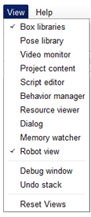
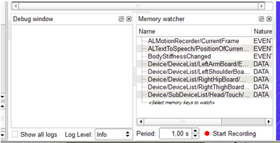
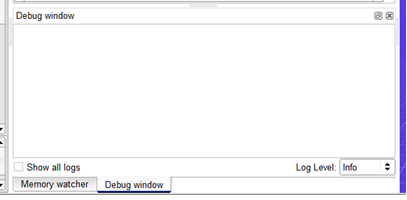
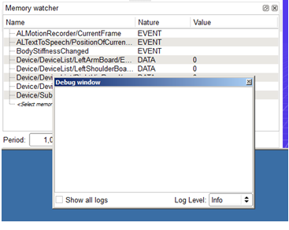

From the View menu, click the panel to display or hide.
Each panel that is already displayed is marked.
To move a panel, drag it by its title bar.
According to the place you dragged it, the panel can:
Take another corner of the Choregraphe window.
Overlap another panel. Tabs appear in order to let you switch between the 2 panels.
Appear as a floating window.
